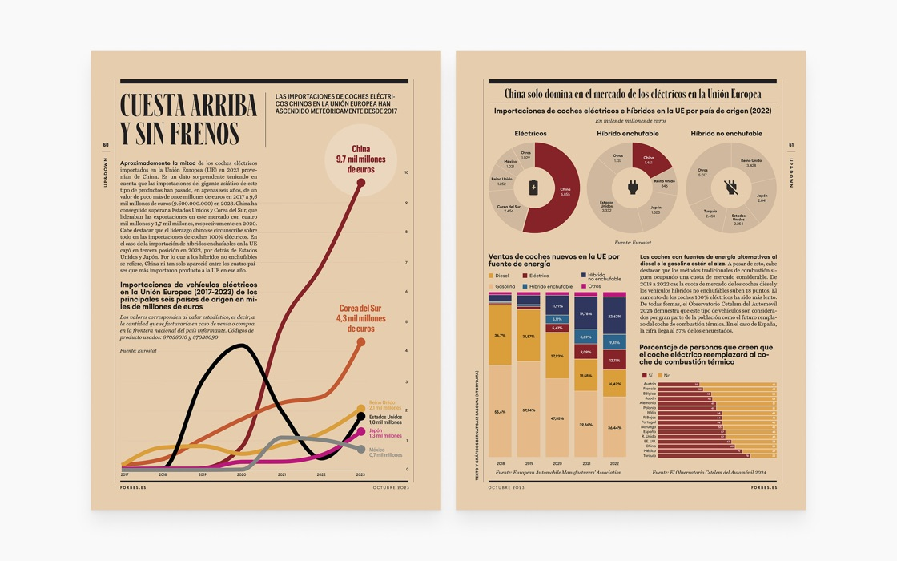
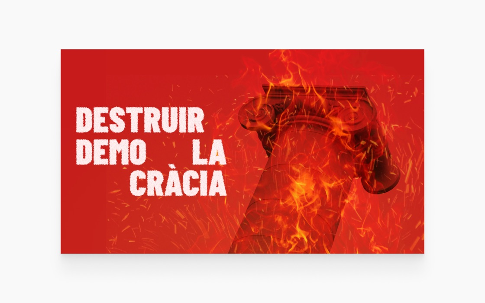
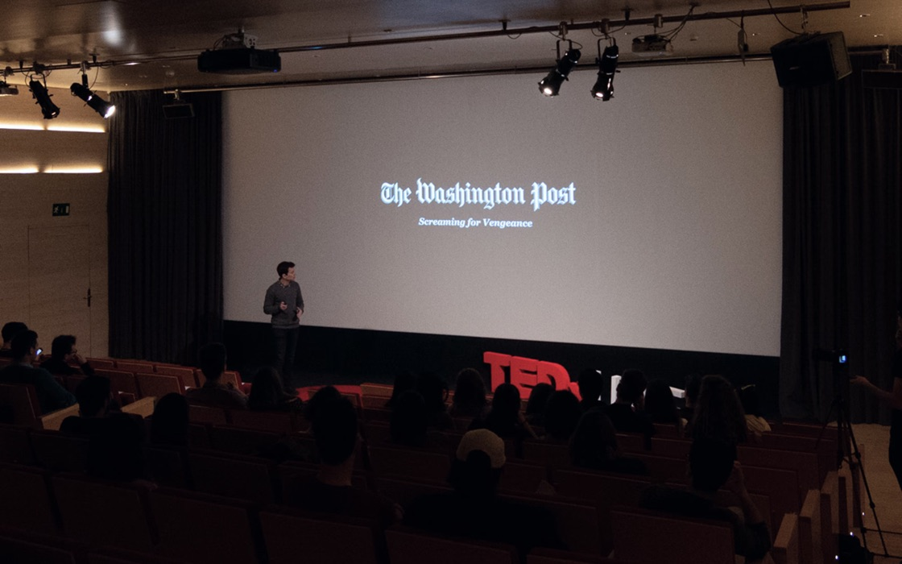

Work
-

Data journalism for Forbes
Researched, wrote and designed double-page data articles for Forbes Spain and Forbes Women
-

Information design for a special report on migration
Created the visual identity for Verificat's "Lies Feed Hate" project and redesigned 100+ charts and infographics
-

Digital news formats for Verificat
Developed Verificat's visual identity, creating assets, templates and formats to systematize the production of digital content for the newsroom and special projects involving other brands
-

Digital news design for election results coverage
Conceptualized and designed a proposal for Diari de Barcelona's election coverage, tailored to Gen-Z


Other projects

Podcast production and brand identity
Co-authored the podcast "Destruir la Democràcia" ("Destroy Democracy") and created its visual identity

TEDxTalk - The future of media: evolution, revolution, disruption
Selected as the student speaker at TEDxUPF in 2019, I gave a talk about the changes in the media industry's news production involving technologies such as artificial intelligence